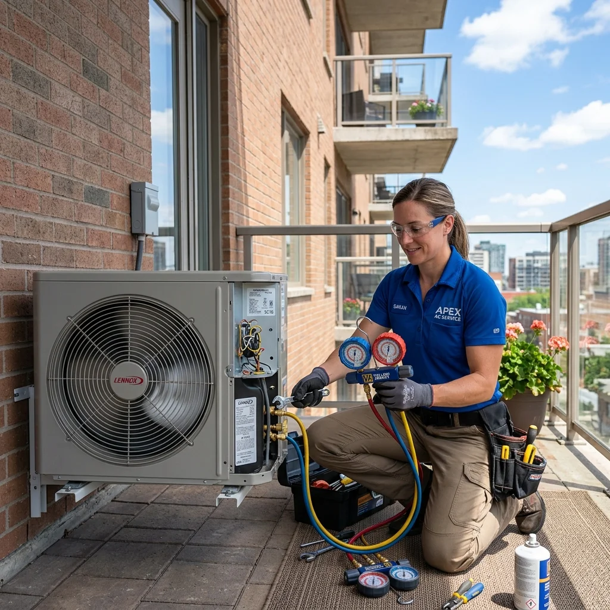

Akdeniz ikliminin en ağır yükünü omuzlayan Tarsus’ta, yaz aylarının kavurucu sıcak dalgaları ve bunaltıcı nem oranları yaşam standartlarını doğrudan etkiler. Bu zorlu hava koşullarında evlerimizde ve iş yerlerimizde kusursuz bir termal denge kurmanın en etkili yolu, üstün Alman mühendisliğiyle üretilen Viessmann klimaların yüksek performansından yararlanmaktır. Viessmann, geliştirdiği yenilikçi inverter teknolojileri, akıllı iklimlendirme yazılımları ve yüksek enerji verimliliği sunan donanımları ile dünya genelinde kalitenin ve dayanıklılığın en önemli simgelerinden biri haline gelmiştir. Ancak en nitelikli mühendislik harikası lüks cihazlar bile zaman içerisinde profesyonel bir teknik bakıma, periyodik kontrole ya da kararlı bir onarım müdahalesine gereksinim duyar. Tam da bu süreçte firmamız Sertler Soğutma, sizlerin bu üst düzey konforunu kesintisiz sürdürmek adına Tarsus genelinde en güvenilir Tarsus Viessmann Klima Servisi hizmetini gururla sunmaktadır.
Viessmann markalı klimalar, bünyelerinde barındırdıkları akıllı elektronik modüller, hassas sensör ağları, yüksek basınçlı kompresör mimarileri ve çevre dostu soğutucu akışkan bileşenleri ile sıradan cihazlardan tamamen ayrışırlar. Bu denli ileri teknolojik ve kompleks bir yapının montajı, dönemsel hijyen temizliği ya da karmaşık arıza çözümleri kesinlikle üst düzey uzmanlık, mesleki deneyim ve dijital donanım altyapısı gerektirir. Sektördeki yenilikçi tüm mühendislik gelişmelerini ve Viessmann’ın güncel cihaz algoritmalarını yakından takip eden eğitimli teknik kadromuzla birlikte, tüm Tarsus Viessmann Klima Servisi taleplerinize en kurumsal, en şeffaf ve en kalıcı yanıtları üretiyoruz. Temel gayemiz sadece günü kurtaran geçici çözümlerle yetinmek değil, Viessmann cihazınızın fabrikasyon verilerindeki maksimum enerji tasarrufunu ve yüksek soğutma gücünü uzun yıllar boyunca ilk günkü kararlılığıyla stabil tutmaktır. Firmamız Sertler Soğutma, Tarsus genelinde konuşlandırılmış yaygın mobil ağı vasıtasıyla, ihtiyaç duyduğunuz her an konfor alanlarınızı kesintiye uğratmadan hızlıca yanınızda yer almaktadır. Profesyonel bir Regal klima servisi ile düzenli bakım yaptırmak cihazınızın ömrünü önemli ölçüde uzatır.
Klimanızın hava sirkülasyon performansında en ufak bir zayıflama hissettiğinizde, cihazınız normalden sesli çalışmaya başladığında ya da beklenmedik bir arıza uyarısı verdiğinde panik yapmadan hızlı hareket etmeniz kritik önem taşır. Erken aşamada gerçekleştirilen profesyonel teknik müdahaleler, küçük ve ekonomik adımlarla çözülebilecek basit yıpranmaların veya tıkanmaların büyüyerek yüksek maliyetli kompresör arızalarına dönüşmesini engeller. Seçkin kadromuzla hayata geçirdiğimiz Tarsus Viessmann Klima Servisi operasyonlarımızda, en son teknoloji dijital ölçüm modülleri ve arıza analiz yazılımları kullanarak sorunun kaynağına tam olarak ulaşıyoruz. Yaşam standartlarınızı düşüren tüm olumsuz hava şartlarına karşı, Sertler Soğutma markasının kurumsal güvencesini ve Alman teknolojisi uzmanlığını seçerek klimaların tüm bakım süreçlerini güvenli ellere emanet edebilirsiniz. Bizimle iletişime geçerek sorunsuz, yüksek verimli ve bütçenizi koruyan profesyonel bir iklimlendirme deneyiminin kapılarını sonuna kadar aralayabilirsiniz.
Teknolojik donanımıyla evlerinize ideal hava kalitesini getiren Viessmann klimalar, hassas mekanik ve elektronik parçalardan meydana gelir. Bu parçaların ömrünü uzatmak ve faturanıza yansıyan enerji tüketimini minimum seviyede tutmak uzmanlık gerektiren titiz bir iştir. Sektördeki en son gelişmeleri yakından takip eden eğitimli ustalarımızla birlikte, tüm Tarsus Viessmann Klima Servisi ihtiyaçlarınıza profesyonel cevaplar sunmaktayız. Amacımız günü kurtaran geçici çözümler üretmek yerine, klimanızın ömrünü maksimuma çıkaracak kalıcı ve köklü müdahaleler gerçekleştirmektir. Tarsus’un her mahallesine ulaşan geniş mobil ağımız sayesinde, iklimlendirme sistemleriniz hiçbir zaman yarı yolda kalmaz ve Sertler Soğutma güvencesini her an hisseder. Uzman bir Toshiba klima servisi ekibinden destek almak, inverter teknolojili cihazınızın en verimli şekilde çalışmasını sağlar.
Sertler Soğutma Güvencesiyle Tarsus Viessmann Klima Servisi Ayrıcalığı
Müşteri odaklı vizyonumuz ve şeffaf hizmet ilkelerimiz sayesinde, Tarsus bölgesinde iklimlendirme sektörünün öncü markalarından biri olmayı başardık. Sunduğumuz her teknik destek sürecinde, en ince ayrıntıyı dahi gözden kaçırmadan titizlikle hareket etmeyi kendimize misyon edindik. Bize emanet ettiğiniz Viessmann marka klimalarınız üzerinde, cihazın orijinal yapısını koruyan özel müdahale protokolleri uyguluyoruz. Profesyonel olarak kurguladığımız Tarsus Viessmann Klima Servisi süreçlerimizle, cihazınızın mekanik dengesine veya elektronik kart bütünlüğüne hiçbir zarar vermeden işlemleri tamamlıyoruz ve Sertler Soğutma kalitesini adresinize taşıyoruz.
Güler yüzlü personelimizi gelişmiş teknik ekipman havuzumuzla entegre ederek, Tarsus genelinde en çok tavsiye edilen servis organizasyonunu oluşturduk. Firmamız Sertler Soğutma ile çalışan kullanıcılar, klima arızalarında ya da mevsimsel temizlik dönemlerinde stres yaşamak veya beklemek zorunda kalmazlar. Teknolojik altyapımız sayesinde Viessmann klimalarınızdaki en zorlu yazılımsal kilitlenmeler veya motor sıkışmaları bile kısa sürede çözüme kavuşturulmaktadır. Viessmann markasının inverter kompresör teknolojisi, hava yönlendirme kanatçıkları ve termistör sistemleri hakkında derinlemesine uzmanlığa sahip ekibimiz, en doğru ve kararlı yaklaşımı sergileyerek Tarsus Viessmann Klima Servisi farkını ortaya koyar. Güvenilir bir Vestel klima servisi desteğiyle klimanızın enerji verimliliğini en üst düzeye çıkarabilirsiniz.
Teknik operasyonlarımızda zaman yönetimine olağanüstü bir hassasiyet gösteriyor, taahhüt ettiğimiz randevu saatlerinde adresinizde hazır bulunuyoruz. Yaşadığınız klima arızasının ev yaşantınızı veya ticari faaliyetlerinizi ne denli olumsuz etkilediğini çok iyi analiz ediyoruz. Sertler Soğutma bünyesindeki mobil acil müdahale filomuz, Tarsus Viessmann Klima Servisi taleplerinize en hızlı reaksiyonu verebilecek şekilde Tarsus'un stratejik noktalarında konumlandırılmıştır. İşletmemizin temel hedefi, bölge halkına ekonomik, güvenli ve sürdürülebilir soğutma çözümleri sunmaktır. Sektördeki benzersiz tecrübemiz sayesinde, klimalarınızdan alacağınız verimlilik katsayısını en üst düzeye çıkarmayı taahhüt ediyoruz.
Yüksek Performanslı Çözümler İçin Profesyonel Tarsus Viessmann Klima Servisi
Evlerimizde veya ticari işletmelerimizde soluduğumuz havanın nem dengesi ve sıcaklık derecesi, yaşam kalitemizi doğrudan etkileyen faktörlerin başında gelir. Doğru bir iklimlendirme strateji izlenmediğinde, hem sağlığımız olumsuz etkilenebilir hem de yüksek elektrik faturalarıyla karşılaşabiliriz. Tamamen kullanıcı faydası gözetilerek tasarlanan geniş Tarsus Viessmann Klima Servisi yelpazemiz, cihaz montajından gaz şarjına kadar her aşamayı eksiksiz kapsar. Sertler Soğutma olarak, Viessmann markalı duvar tipi, salon tipi veya yeni nesil inverter tüm modellerinizde profesyonel bir teknik rehberlik sunmaktayız. Kapsamlı bir York klima servisi hizmeti ile cihazınızın soğutma ve ısıtma performansını optimum seviyede tutabilirsiniz.
Klimanın montaj aşamasında yapılan mühendislik hesap hataları, cihazın ömrünü doğrudan kısaltan ve performansını baltalayan en temel etkendir. Yanlış konumlandırılmış bir iç ünite, odada kör noktalar oluşmasına ve cihazın sürekli en yüksek devirde çalışarak kendini yıpratmasına neden olur. Sertler Soğutma teknik kadromuz, montaj veya yer değişimi taleplerinizde alan keşfini titizlikle gerçekleştirerek en ideal hava akış açısını hesaplar. Borulama mesafesinden dış ünite konsol sağlamlığına kadar her teknik parametreyi uluslararası standartlara göre uygulayarak Tarsus Viessmann Klima Servisi süreçlerini kusursuz yönetiyoruz.
Mevsim geçişlerinde yapılması kritik olan iç temizlik ve sistem kontrolleri de sunduğumuz profesyonel hizmet seçeneklerinin önemli bir parçasını oluşturur. Düzenli aralıklarla Sertler Soğutma firmasından Tarsus Viessmann Klima Servisi desteği alarak, cihazınızın ısı transfer yüzeylerinde biriken çamurlu toz katmanlarından kolayca kurtulabilirsiniz. Temizliği ihmal edilen klimalar, zamanla ortama küf kokusu yaymaya başlar ve solunum yolu hassasiyeti olan bireyler için risk oluşturur. Klimanızın drenaj kanallarını ve fan pervanelerini özel solüsyonlarla arındırarak yaşam alanınızın hava kalitesini koruma altına alıyoruz. Sağlıklı ve konforlu bir atmosfer elde etmek için sunduğumuz bu teknik hizmet seçeneklerinden yılın her günü faydalanabilirsiniz.
Sertler Soğutma Tarsus'ta Viessmann Klimaları Güvenceye Alıyor
Teknolojik cihazların bakım ve onarım süreçlerinde güvenilirlik ve kurumsal ciddiyet her zaman ön planda yer almalıdır. Tarsus halkının büyük güvenini ve takdirini kazanmış bir teknik marka olarak, yerine getirdiğimiz her operasyonda tam sorumluluk bilinciyle hareket ediyoruz. Sertler Soğutma ekipleri tarafından yürütülen Tarsus Viessmann Klima Servisi işlemlerinde, cihazınızın yapısal orijinalliğini korumak birinci önceliğimizdir. Bilgi birikimi olmayan, yetkisiz kişilerin klimanıza yapacağı hatalı müdahaleler, telafisi olmayan motor yanmalarına ve yüksek maliyetli parça hasarlarına yol açabilir.
Teknik personelimizin her biri, iklimlendirme ve soğutma sistemleri üzerine gerekli tüm mesleki yeterlilik belgelerine ve güncel sertifikalara sahiptir. Viessmann markasının her yıl yenilenen kart mimarileri ve hata kodları hakkında düzenli eğitimlerden geçen uzmanlarımız, arızaları anında teşhis eder. Cihazınızda uyguladığımız her bir teknik adım, Sertler Soğutma markasının yüksek kalite standartları ve kurumsal teminatı altında gerçekleştirilmektedir. Müşterilerimize arızanın detayını net bir şekilde açıklamadan ve onaylarını almadan asla parça değişimi veya tamir aşamasına geçiş yapmıyoruz ve Tarsus Viessmann Klima Servisi standartlarını koruyoruz.
Sürdürülebilir bir teknik servis hizmeti, işlem sonrasında sağlanan kesintisiz destek performansı ile ölçülür. Cihazınızda gerçekleştirdiğimiz hassas işçilik faaliyetleri ve uyguladığımız parça çözümleri için siz değerli müşterilerimize tam memnuniyet sözü veriyoruz. İlerleyen süreçte yaşayabileceğiniz en ufak bir teknik tereddütte, Tarsus Viessmann Klima Servisi ekiplerimiz çağrınıza hızla yanıt vererek mağduriyet yaşamanızı engeller. Sertler Soğutma uzmanları Viessmann klimaların çalışma mekaniğini en ince detayına kadar bilerek, sorunsuz bir kullanıcı deneyimi yaşamanız için gerekli tüm önlemleri alır. Risk almadan, profesyonel bir yaklaşımla klimanızı geleceğe taşımak için bizler her zaman buradayız.
Kusursuz İklimlendirme İçin Doğru Tarsus Viessmann Klima Servisi Seçimi
Klimalar, dışarıdan bakıldığında sadece plastik bir kasadan ibaret görünse de arka planda karmaşık bir termodinamik döngüyle çalışırlar. Özellikle Viessmann gibi Alman kalitesini yansıtan markaların tasarımlarında, optimum verimlilik sağlayan hassas elektronik devre elemanları yer alır. Bu nedenle arıza durumlarında sıradan ve bilgisiz müdahaleler cihazı tamamen kullanılmaz hale getirebilir. Yetkin olmayan kişilerin yapacağı işlemler, faturanızın iki katına çıkmasına ve güvenlik risklerinin doğmasına neden olur. İşte bu sebepler yüzünden Tarsus Viessmann Klima Servisi hizmetinin tamamen profesyonel ve ekonomik çözümler sunan kurumsal bir çatıdan, yani Sertler Soğutma firmasından alınması gerekir.
Profesyonel bir teknik servis, arızanın sadece görünen sonucunu değil, o arızayı tetikleyen gizli elektriksel veya mekanik kök sebebi bularak yok eder. Amatör yaklaşımlar ise genellikle geçici çözümler sunarak kısa süre sonra aynı arızanın daha büyük maliyetlerle tekrarlamasına sebebiyet verir. Firmamız Sertler Soğutma, arıza teşhis süreçlerinde ileri teknoloji dijital ölçüm modülleri ve akım analizörleri kullanmaktadır. Bu sayede Viessmann klimanızın kompresör sargılarında veya sensör bloklarında oluşan yıpranmalar hatasız bir şekilde raporlanarak Tarsus Viessmann Klima Servisi güvencesiyle onarılır. Doğru müdahale, bütçenizi gereksiz harcamalardan korurken klimanızın ilk günkü verimlilik değerlerine ulaşmasını sağlar.
İklimlendirme sistemlerinde kullanılan soğutucu akışkan gazların yönetimi de uzmanlık gerektiren son derece kritik bir diğer operasyondur. Hatalı gaz şarjı uygulamaları, eksik veya fazla gaz basılması, klimanın kalbi olan kompresörün kalıcı olarak kilitlenmesine yol açabilir. Profesyonel Tarsus Viessmann Klima Servisi teknisyenlerimiz, Viessmann cihazınızın fabrika etiket değerinde yazan gaz miktarını hassas terazilerle ölçerek doldurur. Sertler Soğutma bünyesinde iş ve çevre güvenliği kurallarına tam uyum sağlayan ekibimiz, evinizin elektriksel emniyetini de en üst düzeyde koruma altına alır. Klimanızın ömrünü tehlikeye atmamak ve ekonomik fiyatlarla kalıcı çözümlere ulaşmak için her zaman uzmanlığımıza güvenebilirsiniz.
Sertler Soğutma Viessmann Klima Yıllık Periyodik Bakım Aşamaları
Viessmann klimaların mevsim geçişlerinde detaylı bakımdan geçirilmesi, cihazın hem ömrünü uzatır hem de performans kayıplarını engeller. Kurumsal hizmet anlayışımız gereği, klima bakımlarını belirli bir standarda ve protokole bağlı olarak titizlikle gerçekleştiriyoruz. Gelişigüzel yapılan bir üstünkörü temizlik, asla gerçek bir bakımın yerini tutamaz ve beklenen verimliliği sağlayamaz. Sertler Soğutma uzman ekibi adresinize ulaştığında, ilk olarak klimanın mevcut çalışma fonksiyonlarını test eder ve Tarsus Viessmann Klima Servisi kalitesiyle süreci başlatır. Cihazın ses seviyesi, üfleme performansı ve elektriksel akım değerleri ölçülerek genel sağlık durumu analiz edilir ve ilk rapor oluşturulur.
İlk kontroller tamamlandıktan sonra, klimanın iç ünite kapakları sökülerek ön filtreler yerinden çıkarılır. Bu filtreler, ortamdaki tozları ve makro partikülleri tuttuğu için özel dezenfektan ilaçlarla yıkanarak tüm gözenekleri açılır. Ardından, iç ünitenin en kritik parçası olan ve havayı soğutan/ısıtan evaporatör (serpantin) kısmına geçilir. Evaporatör, zamanla bakterilerin ve küflerin yuvalandığı, kötü kokuların oluştuğu alandır. Tarsus Viessmann Klima Servisi ekiplerimiz, bu bölgeyi klimaya özel üretilmiş antibakteriyel temizlik sıvıları ve basınçlı pülverizatörler yardımıyla tamamen arındırır. Bu işlem sayesinde cihazın ısı transfer kabiliyeti maksimum seviyeye çıkarılarak enerji tasarrufu sağlanmış olur ve Sertler Soğutma güvencesi tamamlanır.
İç ünitedeki temizliğin ardından drenaj tavası ve drenaj hortumunun kontrolleri gerçekleştirilir. Tıkanmış bir drenaj hattı, klimanın içeriye su akıtmasına ve evinizdeki eşyaların zarar görmesine neden olabileceği için Tarsus Viessmann Klima Servisi teknisyenlerimiz bu adımı çok önemser. Hatlar temizlenip tıkanıklıklar açıldıktan sonra iç ünite plastik aksamları parlatılarak montajı yapılır. Bir sonraki aşamada dış ünite bakımına geçilir; dış ortamın tozuna, çamuruna ve yapraklarına maruz kalan dış ünite kondenser yüzeyi tazyikli suyla yıkanır. Son olarak, soğutucu gaz basınç değerleri kontrol edilir, elektrik bağlantı klemensleri sıkılanır ve cihaz çalışır vaziyette Sertler Soğutma ekiplerince müşteriye teslim edilir.
Tarsus Viessmann Klima Servisi İle İleri Teknoloji Arıza Tespit Süreci
Modern Viessmann klimalar, bünyelerinde yer alan gelişmiş mikroişlemciler sayesinde sistemdeki aksaklıkları algılayabilen ve bunu hata kodu olarak ekrana yansıtan akıllı yapılardır. Ancak bu kodlar sadece genel bir arıza alanına işaret eder; arızanın asıl kaynağını bulmak teknik deneyim ve doğru ekipman gerektirir. Sektörün tecrübeli ismi Sertler Soğutma olarak, arıza tespit süreçlerinde deneme-yanılma yöntemini tamamen ortadan kaldırıyoruz. Cihazınıza müdahale ederken teknolojik ölçüm aletleri kullanarak arızayı nokta atışı tespit ediyor, gereksiz parça değişimlerinin ve ek maliyetlerin önüne geçerek profesyonel Tarsus Viessmann Klima Servisi hizmeti sunuyoruz.
Teknisyenlerimiz arızalı bir Viessmann klimaya müdahale ederken öncelikle cihazın hata kod geçmişini dijital analizörler vasıtasıyla inceler. Kompresörün çekmiş olduğu akım ampermetre ile ölçülerek motor sargılarında bir problem olup olmadığı kontrol edilir. Eğer cihaz hiç çalışmıyor veya sürekli kendini kapatıyorsa, elektronik kart üzerindeki voltaj değerleri ve röleler tek tek test edilir. Tarsus Viessmann Klima Servisi süreçlerimizde, mekanik arızaların yanı sıra elektronik kart arızalarını da gelişmiş laboratuvar ortamımızda çözüme kavuşturabiliyoruz. Sertler Soğutma bünyesinde sunulan bu yüksek standartlı hizmet, yüksek maliyetli yeni kart alımları yerine ekonomik onarım alternatifleri sunabilmemizi sağlar.
Soğutma veya ısıtma performansındaki yetersizlik durumlarında ise manometre setleri kullanılarak sistemin gaz basıncı ölçülür. Düşük basınç değerleri sistemde bir kaçak olduğunu gösterir ki bu durumda ekiplerimiz hemen azot testi veya hassas elektronik gaz kaçak arama dedektörleri ile sızıntının yerini belirler. Sızıntı noktası kaynak yapılmadan veya ilgili rekor bağlantısı yenilenmeden kesinlikle gaz dolum işlemine geçilmez. Sertler Soğutma firmamızın uyguladığı bu profesyonel ve detaylı arıza tespit yöntemleri, Tarsus Viessmann Klima Servisi bünyesinde cihazınızın en doğru ve en kalıcı şekilde hayata döndürülmesini garanti altına alır.
Sertler Soğutma Uzmanlığında Orijinal Viessmann Yedek Parça Avantajı
Klima onarımlarında uzun ömürlü ve sorunsuz bir performans elde etmenin en temel şartı, arızalanan bileşenlerin yerine orijinal yedek parçaların kullanılmasıdır. Piyasada yan sanayi veya üniversal parça olarak adlandırılan kalitesiz malzemeler, kısa vadede ucuz bir çözüm gibi görünse de uzun vadede cihazınıza büyük zarar verir. Orijinal olmayan bir parça, Viessmann klimanızın fabrikasyon çalışma algoritmasına tam uyum sağlayamaz. Bu durum, cihazın diğer sağlam bileşenlerinin de aşırı yük altında kalmasına ve zincirleme arızaların oluşmasına yol açar. Bu riski ortadan kaldırmak adına Sertler Soğutma olarak sadece orijinal parçalarla Tarsus Viessmann Klima Servisi desteği sağlıyoruz.
Kullandığımız Viessmann orijinal yedek parçaları, doğrudan üretici standartlarında olup cihazınızın ilk günkü verimliliğini ve güvenliğini korumasını sağlar. Örneğin, yan sanayi bir fan motoru veya kompresör rölesi takıldığında klimanız çok daha sesli çalışabilir veya yüksek enerji tüketebilir. Profesyonel Tarsus Viessmann Klima Servisi hizmetlerimiz kapsamında değiştirdiğimiz her bir orijinal parça, cihazınızın ömrünü doğrudan uzatır. Sertler Soğutma kalitesiyle sunulan orijinal sensörler, elektronik kartlar, dört yollu vanalar ve kompresörler sayesinde klimanızın inverter teknolojisi en ufak bir performans kaybına uğramadan çalışmaya devam eder.
Orijinal parça kullanımı aynı zamanda kullanıcılara ciddi bir ekonomik güvence sunar. Değişimini yaptığımız tüm orijinal Viessmann parçaları firmamız tarafından parça garantisi altına alınmaktadır. Garanti süresi boyunca aynı parçadan kaynaklı yaşanabilecek olası bir aksaklıkta, ekiplerimiz hiçbir ek ücret talep etmeden gerekli Tarsus Viessmann Klima Servisi müdahalelerini gerçekleştirir. Sertler Soğutma olarak şeffaflık ilkemiz gereği, değiştirilen eski ve arızalı parçayı da müşterimize göstererek sistemden neden çıkarıldığını teknik detaylarıyla izah ediyoruz. Klimanızın değerini ve kalitesini korumak için orijinal parça kullanımından asla ödün vermiyoruz.
En Sık Karşılaşılan Sorunlar ve Tarsus Viessmann Klima Servisi Çözümleri
Viessmann klimalar ne kadar sağlam olurlarsa olsunlar, Tarsus’un yoğun nemli ve aşırı sıcak ikliminde zamanla bazı karakteristik sorunlar çıkarabilirler. Bu sorunların başında cihazın elektrik gelmesine rağmen üfleme yapmaması, dış ünitenin aşırı gürültülü çalışması veya iç ünitenin odaya su akıtması gelir. Kullanıcıların sıklıkla karşılaştığı bu durumlarda panik yapmadan Sertler Soğutma acil hattını aramak en doğru çözümdür. Profesyonel olarak kurguladığımız Tarsus Viessmann Klima Servisi hizmet ağımızla, tüm bu sık karşılaşılan problemlere karşı önceden hazırlanmış kesin ve kalıcı çözüm formüllerimiz mevcuttur.
İç ünitenin su damlatması sorunu genellikle Tarsus’taki yüksek nem nedeniyle drenaj tavasının hızla dolması ve hortumun toz yüzünden tıkanmasından kaynaklanır. Ekiplerimiz özel vidalı pompalar yardımıyla drenaj hattını açarak bu sorunu saniyeler içinde çözer. Dış ünitenin gürültülü çalışması ise kompresör takozlarının eskimesinden veya fan kanatlarının balansının bozulmasından ileri gelir. Tarsus Viessmann Klima Servisi teknisyenlerimiz, dış ünite mekanik parçalarını yağlayarak ve kauçuk takozları yenileyerek cihazı ilk günkü kütüphane sessizliğine geri döndürür. Sertler Soğutma uzmanlığı, kronikleşmiş tüm Viessmann arızalarını ortadan kaldıracak güce sahiptir.
Cihazın üfleme yapmasına rağmen soğutmaması ise genellikle termistör sensörlerinin bozulması ya da sistemde meydana gelen bir gaz sızıntısı ile ilgilidir. Sensörlerin direnç değerleri ohmmetre ile ölçülerek arızalı parça tespit edilir ve orijinal yenisiyle anında değiştirilir. Sertler Soğutma firmamızın Tarsus’ta uyguladığı bu hızlı ve garantili çözümler, Viessmann klimanızın kesintisiz bir performansla çalışmasını sağlar. En karmaşık arıza kodlarından en basit mekanik takılmalara kadar her aşamada Tarsus Viessmann Klima Servisi uzman kadromuz en büyük güvenceniz olacaktır.
Sertler Soğutma Viessmann Klima İnverter Kart Onarımı Detayları
Viessmann klimaların tüm çalışma algoritmalarını, enerji yönetim süreçlerini ve inverter kompresör devirlerini kontrol eden en hayati parçası şüphesiz elektronik ana kartıdır. Tarsus bölgesinde özellikle yaz aylarında aşırı sıcaklar nedeniyle elektrik şebekesinde meydana gelen ani voltaj dalgalanmaları veya yüksek nem, bu hassas kartların hasar görmesine yol açabilir. Klima kumanda komutlarına hiçbir şekilde yanıt vermiyor, elektrik gelmesine rağmen ekran açılmıyor ya da cihaz sürekli iletişim hatası kodu veriyorsa sorun elektronik kart üzerindedir. Firmamız Sertler Soğutma, lüks ve yüksek maliyetli sıfır kart değişimleri yerine, gelişmiş laboratuvar ortamında garantili kart onarımı çözümleri sunarak Tarsus Viessmann Klima Servisi alanında fark yaratmaktadır.
Elektronik kart onarımı süreci, statik korumalı laboratuvar stantlarımızda, ileri teknoloji osiloskoplar, dijital multimetreler ve mikroskobik lehimleme istasyonları eşliğinde milimetrik düzeyde yürütülen çok hassas bir mühendislik operasyonudur. Kart üzerindeki güç modülleri, akım röleleri, doğrultucu diyotlar, IGBT modülleri ve mikroişlemciler tek tek elektriksel testlere tabi tutularak akım taşıma kapasiteleri ölçülür. Tarsus Viessmann Klima Servisi elektronik kadromuz, arızalı komponenti noktasal olarak saptayarak orijinal teknik değerlere sahip yeni bileşenlerle değişimini gerçekleştirir. Bu sayede kartın orijinal yazılımsal mimarisi ve Alman mühendislik standartları korunurken, yeni bir kart satın alma maliyetinin çok altında ekonomik bir çözüm üretilmiş olur.
Revizyonu tamamlanan Viessmann anakartları, özel klima simülatör stantlarımıza bağlanarak ağır yük altında test edilir ve tüm fonksiyonlarının hatasız çalıştığı dijital olarak onaylanmadan klimanıza montajlanmaz. Kart üzerindeki mikroişlemci yazılım kilitlenmeleri veya eprom hafıza hataları da güncel yazılım kodları yeniden yüklenerek kararlı hale getirilir. Sertler Soğutma firmamızın sunduğu bu gelişmiş elektronik altyapı, Tarsus’ta kart tamiri alanında bizi en güvenilen teknik merkez konumuna taşımıştır. Yapılan tüm anakart revizyon operasyonları firmamızın kurumsal işçilik ve parça garantisi altında yer alarak kullanıcıya tam bir ekonomik güvence sunar. Elektronik kart arızalarını riske atmadan, profesyonel yöntemlerle çözüme kavuşturmak için Tarsus Viessmann Klima Servisi teknik altyapımıza her zaman güvenebilirsiniz.
Tarsus Viessmann Klima Servisi Gaz Kaçağı Tespiti ve Şarj İşlemleri
Viessmann klimaların ısı transfer döngüsünü kayıpsız gerçekleştirebilmesi, bakır boru hatları içerisinde kapalı devre olarak dolaşan çevre dostu R32 veya R410A soğutucu gazın ideal basınç değerlerinde bulunmasına bağlıdır. Normal şartlar altında sızdırmaz bir sistemde klima gazı bitmez; eğer cihazınız soğutma yapmıyor ve boru bağlantılarında karlanma oluşuyorsa bu durum sistemde bir gaz kaçağı olduğunun kesin işaretidir. Kaçak noktası bulunup tamir edilmeden sisteme doğrudan gaz basılması teknik olarak büyük bir hatadır ve kısa süre sonra gazın tekrar uçmasına neden olur. Sertler Soğutma olarak, gaz kaçağı tespiti ve şarjı operasyonlarında en ileri teknolojik yöntemleri kullanarak Tarsus Viessmann Klima Servisi kalitesini en üst düzeyde uyguluyoruz.
Gaz kaçağı tespiti sürecinde ekiplerimiz ilk olarak iç ve dış ünite üzerindeki bakır boru bağlantı rekorlarını ve kaynak noktalarını fiziksel olarak inceler. Gözle görülmeyen mikroskobik sızıntıların saptanması için ise havadaki soğutucu gaz moleküllerini algılayan hassas elektronik gaz kaçak dedektörleri kullanılır. Sızıntı noktası belirlendikten sonra, Tarsus Viessmann Klima Servisi ustalarımız gümüş kaynak teknolojisi kullanarak çatlağı kalıcı olarak kapatır veya hasarlı bakır boru bölümünü tamamen yeniler. Onarımın ardından sistemde kalan tüm hava ve nem güçlü vakum makineleriyle tahliye edilerek boru içi mutlak saflığa ulaştırılır. Vakumlama işlemi kompresörün ömrünü korumak adına en az otuz dakika boyunca kesintisiz olarak sürdürülür.
Vakumlama işlemi başarıyla tamamlandıktan sonra, Viessmann klimanızın fabrika bilgi etiketinde belirtilen soğutucu akışkan gramaj değeri dikkate alınarak gaz şarjı adımına geçilir. Firmamız Sertler Soğutma, gaz dolumu işlemlerini hassas dijital teraziler kullanarak sıvı formda ve gramı gramına sisteme şarj edecek şekilde gerçekleştirir. Eksik veya fazla gaz şarjı kompresörün sıvı sarmasına, hararet yapmasına ve motor sargılarının kalıcı olarak yanmasına neden olabileceği için bu terazi hassasiyeti hayati önem taşır. Uyguladığımız bu bilimsel gaz şarjı yöntemi, Viessmann klimanızın en düşük elektrik tüketimiyle en yüksek serinliği üretmesini garanti altına alırken bütçenizi korur. Sorunsuz ve garantili bir gaz şarjı desteği almak için Tarsus Viessmann Klima Servisi çağrı merkezimize haftanın her günü kesintisiz olarak ulaşabilirsiniz.
Sertler Soğutma Uzmanlarından Viessmann Kumanda Ayarı İpuçları
Viessmann klimaların uzaktan kumandaları, cihazın sahip olduğu ileri Alman teknolojisini, akıllı konfor modlarını ve enerji tasarruf fonksiyonlarını yönetmenizi sağlayan en önemli kontrol arayüzüdür. Kumanda üzerinde yer alan "Eco" (ekonomik mod), "Turbo" (hızlı soğutma) veya "Sleep" (konforlu uyku modu) gibi özel butonlar, cihazın çalışma algoritmasını tamamen değiştirerek ortam konforunu optimize eder. Ancak bazen pillerin değiştirilmesi, uzun süre kullanılmama veya yanlış tuş kombinasyonlarına basılması sonucunda kumanda ile klimanın dijital senkronizasyonu bozulabilir ya da çocuk kilidi aktif kalabilir. Sertler Soğutma uzmanları, kullanıcılarımızın bu akıllı fonksiyonlardan maksimum verim alabilmesi için gerekli tüm teknik kumanda ayarlarını kararlılıkla yerine getirerek Tarsus Viessmann Klima Servisi rehberliğini sunar.
Kumandanız klimaya yanıt vermediğinde veya ekranda küçük bir asma kilit sembolü belirdiğinde endişe etmenize gerek yoktur; genellikle sıcaklık artırma (+) ve azaltma (-) tuşlarına aynı anda birkaç saniye basılı tutmak kilidi çözer. Teknik ekiplerimiz, kumanda üzerindeki yazılımsal sıfırlama (reset) işlemlerini ve frekans adresleme kodurlarını yeniden tanımlayarak sinyal iletişimini hızlıca yeniden kurar. Tarsus Viessmann Klima Servisi hizmetlerimiz kapsamında, cihazın iç ünitesindeki alıcı göz kartının sağlamlığını da test ederek uzaktan kumandanızın en uzak mesafeden bile klima ile kusursuz konuşmasını sağlıyoruz. Ayrıca multi (çoklu) split sistemlerde her bir odanın kumandasını doğru iç ünite frekansına sabitleyerek sinyal karışıklıklarının önüne geçiyoruz ve Sertler Soğutma kurumsallığını yansıtıyoruz.
Kullanıcılarımıza servis sonrasında kumanda üzerinde yer alan akıllı programlama modlarının nasıl aktif edileceğini ve haftalık zamanlayıcı saatlerinin nasıl kurgulanacağını da detaylıca izah ediyoruz. Doğru modda ve stabil bir konfor sıcaklığında (yaz aylarında 24°C - 26°C) çalıştırılan bir Viessmann klima, sağlığınızı korurken enerji tüketimini de minimum seviyede tutar. Sertler Soğutma teknik kadrosunun sunduğu bu bilgilendirici rehberlik sayesinde, premium cihazınızın tüm akıllı özelliklerini keşfederek iklimlendirme deneyiminizi mükemmelleştirebilirsiniz. Kusursuz kumanda ayarları, dijital senkronizasyon çözümleri ve akıllı mod aktivasyonları için Tarsus Viessmann Klima Servisi uzman desteğimizden her zaman tam kapsamlı faydalanabilirsiniz.
Tarsus Viessmann Klima Servisi Hızlı Randevu Hattı ve İletişim Bilgileri
Klimanız Tarsus’un en bunaltıcı yaz gününde aniden durduğunda veya su akıtmaya başladığında, karşınızda hızlı aksiyon alabilen, kurumsal bir kimliği ve yasal sorumluluğu olan bir teknik muhatap bulmak istersiniz. İletişim süreçlerimizi tamamen müşteri konforuna ve süratli çözümlere odaklı olarak tasarlayan firmamız Sertler Soğutma, Tarsus genelinde en hızlı erişilebilen teknik servis ağını başarıyla kurmuştur. Resmi telefon hatlarımız, kurumsal web sitemiz ve dijital destek kanallarımız üzerinden bizlere ulaştığınız anda, Tarsus Viessmann Klima Servisi talebiniz anında merkez sistemimize kaydedilir. Bölgede hazır bekleyen nöbetçi mobil teknik araçlarımız, koordinasyon merkezimizden gelen iş emri doğrultusunda vakit kaybetmeden adresinize doğru hareket eder.
Hizmet ağımız Tarsus’un sadece merkezi ile sınırlı kalmayıp; Kırklarsırtı, Yarbay Şemsettin, Bağlar, Anıt, Öğretmenler, Şehitishak, Yeni Mahalle, Fatih, Gazipaşa, Tozkoparan, Altaylılar, Kemalpaşa ve Kavaklı başta olmak üzere tüm mahalleleri ve çevre yerleşim yerlerini kapsamaktadır. Hangi noktada olursanız olun, Tarsus Viessmann Klima Servisi ihtiyacınız olduğunda uzaklık farkı gözetmeksizin aynı kalite, aynı şeffaf fiyat politikası ve aynı hız standartları ile kapınızda oluyoruz. Donanımlı araçlarımızın içerisinde Viessmann klimaların en çok ihtiyaç duyduğu orijinal yedek parçalar, kart bileşenleri ve gaz tüpleri stoklu bulundurulduğu için arızaların çok büyük bir kısmını ilk ziyaret esnasında yerinde onarıyoruz. Sertler Soğutma kurumsal vizyonu gereği, zamanın sizler için ne kadar değerli olduğunun tam bilinciyle hareket ederek sizi saatlerce beklemek zorunda bırakmaz.
Bizimle iletişime geçip hızlı randevu oluşturmak için çağrı merkez numaralarımızı günün istediğiniz saatinde güvenle arayabilirsiniz. Telesekreter kuyruklarında vakit kaybetmeden, doğrudan uzman müşteri temsilcilerimizle görüşerek arıza bildiriminde bulunabilir veya periyodik bakım randevunuzu konforunuza göre planlayabilirsiniz. Ayrıca kurumsal whatsapp destek hattımız üzerinden klimanızın ekranındaki arıza kodunun fotoğrafını veya arıza videosunu paylaşarak ön teşhis sürecini çok daha süratli hale getirebilirsiniz. Şeffaf fiyatlandırma politikamız gereği adreste yapılan ön incelemede belirlenen tüm maliyet detayları onayınıza sunulur ve kabulünüz halinde tamir süreci başlatılır. Konforunuzu şansa bırakmamak ve profesyonel acil Tarsus Viessmann Klima Servisi desteğine anında erişmek için Sertler Soğutma resmi iletişim numaralarımızı rehberinize güvenle kaydedebilirsiniz.
Sıkça Sorulan Sorular
Viessmann klimanız soğutma yapmıyorsa servis çağırmadan önce kumanda üzerindeki mod ayarlarınızı kontrol edin. Cihazın "Cool" yani kar tanesi sembolünde olduğundan ve sıcaklık derecesinin oda sıcaklığının altında (ayarların 22-24°C gibi) olduğundan emin olun. Ardından iç ünitenin ön plastik kapağını açarak toz filtrelerinin tamamen tıkanıp tıkanmadığına bakın. Eğer filtreler temiz ve mod doğruysa, sorun inverter kompresör kilitlenmesi, elektronik kart arızası veya gaz eksikliği olabilir. Bu durumda kesin ve analitik bir teşhis için Sertler Soğutma firmamızdan profesyonel Tarsus Viessmann Klima Servisi desteği talep etmelisiniz.
Evet, düzenli periyodik klima bakımı yaptırmak elektrik faturalarınızı doğrudan ve hissedilir oranda düşürür. Bakımsız bir klimanın iç ünite evaporatörü ve dış ünite kondenseri toz katmanlarıyla kaplandığında ısı transfer verimi düşer ve kompresör odayı soğutabilmek için durmaksızın en yüksek devirde çalışır. Tarsus Viessmann Klima Servisi ekiplerimiz tarafından yapılan derinlemesine temizlik ve gaz basıncı ayarlamaları sayesinde cihaz minimum enerjiyle maksimum performans üretir, bu da faturanıza tasarruf olarak yansır ve Sertler Soğutma kalitesi bütçenizi korur.
Klimalar tamamen kapalı devre sızdırmazlık esasına göre üretilen iklimlendirme sistemleridir. Bu nedenle normal şartlar altında Viessmann klimaların içerisindeki soğutucu gaz kendi kendine bitmez, eksilmez veya tükenmez. Eğer cihazınızda gaz eksikliği mevcutsa, bakır boru bağlantı rekorlarında, kaynak noktalarında veya ünite peteklerinde mekanik bir sızıntı yani gaz kaçağı var demektir. Sertler Soğutma teknisyenlerimiz kaçak noktasını elektronik dedektörlerle bulup onarmadan asla gaz dolumu yapmaz. Sızıntı tamir edildikten sonra yapılan gaz dolumu cihazı yıllarca sorunsuz çalıştırmaya yeterlidir.
Klimadan gelen küf, rutubet veya ekşi kokunun temel nedeni, iç ünite evaporatör peteklerinin ve drenaj tavasının çalışma esnasında sürekli nemli kalması sonucu buralarda yuvalanan bakteri ve mantar tabakalarıdır. Bu kokuları tamamen engellemek için evde sadece filtreleri yıkamak kalıcı bir çözüm sunmaz. Tarsus Viessmann Klima Servisi uzmanlarımızın uyguladığı profesyonel iç ünite temizliği kimyasalları ve anti-bakteriyel dezenfeksiyon spreyleri sayesinde, kokuyu üreten tüm zararlı mikroorganizmalar kökten yok edilir. Sertler Soğutma tarafından sunulan bu hijyenik işlem evinizdeki havayı daima ferah tutar.
İç üniteden su damlaması veya akması, klimanın ortamdaki nemi yoğuşturarak oluşturduğu suyun dışarıya tahliye edilemediği anlamına gelir. Bunun en yaygın sebebi dışarıya uzanan drenaj (tahliye) hortumunun toz veya çamur birikintileri nedeniyle tıkanmasıdır. Ayrıca hortumun kırılması, yukarı doğru yanlış eğim alması ya da iç ünite montaj terazisinin bozulması da suyun içeriye taşmasına yol açar. Damlayan su elektronik aksamlara zarar verebileceği için klimayı hemen sigortasından kapatmalı ve acil Tarsus Viessmann Klima Servisi hattımızla, yani Sertler Soğutma çağrı merkeziyle iletişime geçmelisiniz.
Gelişmiş teknik laboratuvarımızda gerçekleştirdiğimiz elektronik kart tamir işlemleri son derece güvenli ve yüksek başarı oranına sahip ekonomik çözümlerdir. Sertler Soğutma olarak kart tamirinde sadece orijinal ve yüksek kaliteli mikro bileşenler (kondansatör, röle, entegre vb.) kullanıyoruz. Kart üzerindeki arızalı parça yenilendikten sonra sistem test stantlarında simüle edilerek ağır yük testlerine tabi tutulur. Yapılan işlemler ve değiştirilen parçalar firmamızın işçilik garantisi altında olduğu için, tamir edilen bir kart doğru elektrik altyapısı ile uzun yıllar sorunsuz görev yapar ve Tarsus Viessmann Klima Servisi güvencesini tam yansıtır.
Hem sağlıklı hem ekonomik olan sıcaklık nedir? Klimaları yazın çok düşük derecelere (örneğin 18°C veya 19°C) ayarlamak odanın daha hızlı soğumasını sağlamaz; sadece kompresör motorunun durmaksızın en yüksek devirde çalışmasına ve faturanızın kabarmasına neden olur. İnsan sağlığı ve enerji ekonomisi açısından en ideal yaz konfor sıcaklığı 24°C ile 26°C arasındadır. Dış ortam sıcaklığı ile iç mekan sıcaklığı arasındaki farkın 7-8 dereceden fazla olmaması klimanın mekanik sağlığını korur ve ani sıcaklık değişimlerinden kaynaklanan klima çarpmalarının önüne geçer. Sertler Soğutma uzmanları bu stabil kullanımı her periyodik Tarsus Viessmann Klima Servisi sürecinde önemle tavsiye eder.
Viessmann klimaların fabrika çıkışındaki yüksek performans, sessizlik ve benzersiz enerji tasarruf değerlerini koruyabilmesi için onarımlarda mutlaka orijinal yedek parça kullanılması zorunludur. Yan sanayi veya üniversal parça olarak adlandırılan kalitesiz malzemeler, cihazın inverter çalışma algoritmasına ve elektronik voltaj dengelerine tam uyum sağlayamaz. Bu durum klimanın gürültülü çalışmasına, fazla enerji tüketmesine ve kısa süre sonra sağlam olan diğer mekanik parçaların da arızalanmasına yol açar. Sertler Soğutma olarak Tarsus Viessmann Klima Servisi tamir süreçlerimizde sadece orijinal parçalar tercih ederek bütçenizi ve cihazınızı koruyoruz.
Vakumlama, klima bakır boru hattının içerisindeki havanın ve nemin güçlü bir vakum pompasıyla tamamen çekilmesi işlemidir ve montajın en kritik teknik adımıdır. Vakum yapılmazsa, boruların içinde kalan hava ve görünmeyen nem soğutucu akışkan gazla birleşerek aside dönüşür. Bu asit zamanla kompresör motorunun sargılarını eriterek motorun kalıcı olarak yanmasına neden olur. Ayrıca sistemde kalan hava gazın termodinamik akışını bozarak cihazın soğutma verimini ciddi oranda düşürür. Sertler Soğutma bünyesindeki Tarsus Viessmann Klima Servisi montajlarımızda vakumlama işlemi standart ve zorunlu bir protokoldür.
Firmamız Sertler Soğutma, tüm teknik servis ve onarım hizmetlerinde adil, şeffaf ve bütçe dostu bir fiyat politikası yürütmektedir. Toplam tamir maliyeti; arızanın türüne, değiştirilmesi gereken yedek parçanın niteliğine (sensör, fan motoru, kart, kompresör vb.) ve harcanacak işçilik süresine göre belirlenir. Ekiplerimiz adreste dijital analizörlerle arıza tespitini yaptıktan sonra size net bir maliyet analizi sunar. Onaylamadığınız hiçbir işlem için sizden ek bir ücret talep edilmez. Rakam vermekten kaçınarak her zaman en ekonomik Tarsus Viessmann Klima Servisi çözümlerini sunmayı hedefliyoruz.
Evet, Viessmann inverter modeller geleneksel eski tip on/off klimalara göre çok daha gelişmiş bir elektronik altyapıya, mikroişlemcili akıllı kartlara ve değişken frekanslı kompresör motorlarına sahiptir. İnverter klimaların tamiri, gelişmiş dijital ölçüm aletleri ve bu akıllı teknolojiye hakim profesyonel uzmanlık gerektirir. Yetkin olmayan kişilerin inverter sistemlere müdahale etmesi büyük risk taşır. Sertler Soğutma kadromuz, Viessmann inverter teknolojisi üzerine özel eğitimler almış teknisyenlerden oluşur. Yazılımsal ve donanımsal tüm inverter arızaları servisimizce Tarsus Viessmann Klima Servisi standartlarında hatasız şekilde çözülmektedir.
Klimaların yılda en az iki kez, mevsim geçişlerinde profesyonel periyodik bakımdan geçirilmesi teknik olarak tavsiye edilir. Yaz sezonu başlamadan önce (Nisan-Mayıs) yapılan bakım soğutma performansını zirveye taşırken ve faturanızı korurken; kış sezonu öncesinde (Ekim-Kasım) yapılan bakım ise cihazın ısıtma modunda yüksek verimle çalışmasını sağlar. Yılda iki kez Sertler Soğutma firmasından Tarsus Viessmann Klima Servisi desteği almak, klimanızın ömrünü uzatır ve sizi kışın ortasında veya yazın sıcağında sürpriz, zamansız arızalarla karşılaşmaktan korur.
Kumanda çalışmıyorsa ilk olarak pillerini orijinal yenileriyle değiştirip kumanda ekranının gelip gelmediğini kontrol edin. Piller yeni olmasına rağmen klima kumanda komutlarına yanıt vermiyorsa, sorun iç ünite üzerindeki sinyal alıcı göz kartında veya kumandanın kendi verici ledinde olabilir. Akıllı telefonunuzun kamerasını kumandanın önündeki lede doğru tutup kumanda tuşlarına bastığınızda kameradan mor/kırmızı bir ışık flaşı görüyorsanız kumanda sağlamdır, sorun klimanın alıcı gözündedir. Sertler Soğutma ekiplerimiz alıcı göz değişimini yerinde kolayca yapabilmektedir ve Tarsus Viessmann Klima Servisi konforunu hızla iade eder.
Viessmann klimalarda hata kodları, arızanın gerçekleştiği teknik bölgeyi bildiren dijital sinyallerdir. Örneğin, sensör arızaları, haberleşme kopuklukları veya kompresör aşırı yük korumaları farklı kodlarla ekrana yansır. Bu kodlar belirdiğinde cihaz güvenlik amacıyla çalışmayı durdurur. Nedeni kablo kopması, oksitlenme veya elektronik kart hasarı olabilir. Profesyonel Tarsus Viessmann Klima Servisi teknisyenlerimize, yani Sertler Soğutma firmamıza başvurarak bu hataların analitik cihazlarla kesin çözümünü sağlayabilirsiniz.
Tarsus genelinde stratejik noktalarda hazır bekleyen yaygın mobil teknik araç filomuz sayesinde, randevu taleplerinize en hızlı şekilde yanıt veriyoruz. Çağrı merkezimize kayıt bıraktığınız gün içerisinde, size en uygun olan zaman diliminde ekiplerimiz adresinize ulaşır. Acil durumlarda ve gece nöbetçi servis uygulamalarımızda bu süre Tarsus'un mahalle yakınlığına göre minimum seviyelere kadar inmektedir. Zaman yönetimini mükemmel şekilde yürüten Sertler Soğutma, sizi saatlerce bekletmeden sorununuzu çözerek Tarsus Viessmann Klima Servisi kalitesiyle konforunuzu yeniden inşa eder.